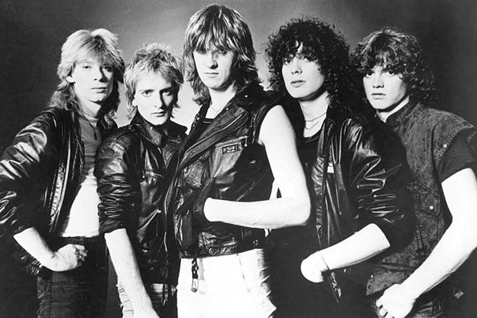

New Wave of British Heavy Metal

Background
In the United Kingdom from 1973 to 1975 there was an economic recession that took place that led to a state of social unrest and widespread poverty in the latter half of the decade. The desperation and the violent reaction of a generation robbed of a safe future was represented well by the UK Punk movement and the slightly later New Wave of British Heavy Metal.
Rock music had begun becoming heavier and heavier in the decade before this one, with bands such as Bad Company, Led Zeppelin and Deep Purple laying the groundwork for the heavier sound to come.
History
The Underground movement began in 1975 with various heavy metal groups debuting in small clubs and bars all around the UK. These bands tended to compete for space with the also growing Punk scene at the time, leading to a bit of a rivalry. This boom of bands also lead to the creation of several independent record labels all around the UK to distribute all this new music. While punk at the time was being covered extensively, it wasn't Tommy Vance, a BBC radio host, took notice of this growing scene and started playing singles of these bands on the "Friday Night Rock" show on BBC.
Because of this, Metal began to boom in the early 1980s in the UK, with several bands reaching massive success, allowing them to tour internationally and make a name for themselves. Towards the end of this movement around 1986, a few bands such as Iron Maiden maintained a cvlt following, while other bands such as Venom began to help develop other forms of Extreme Metal, some bands saw the popularity fading and didn't want to let their fame die with it, evolving their sound into a more radio friendly Glam Metal image, which would last through the 1980s.
Included Genres
- Heavy Metal
- Speed Metal
- Glam Metal